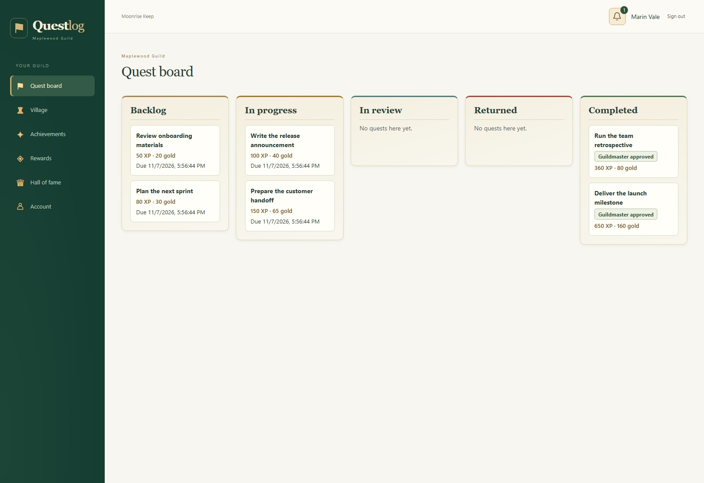

Assign the quest
Choose a member, describe the work, set XP and gold, and add a deadline or backlog reminder.
The workplace guild
Give your team a quest worth completing.
Turn everyday work into shared progress. Assign quests, review the results, and reward a job well done.
Your team.
Your guild.
A familiar workflow, a different world
Questlog brings a task board, team conversations, and recognition into one themed workspace. Members can follow their assignments and share the work. Guildmasters decide when a quest is ready to receive its reward.
The village grows through early milestones. Levels and badges keep progress visible as the guild takes on its next challenge.
From assignment to achievement
Choose a member, describe the work, set XP and gold, and add a deadline or backlog reminder.
Start the quest, attach supporting files, and keep questions and feedback in its discussion thread.
Approve the result to award XP and gold, or return it with comments so the member can try again.
A look inside the guild
Real application screens with sample workspace data. Select a screen to inspect it.

Make the guild your own
Edit XP thresholds, choose your level cap up to 99, and upload badges to mark the milestones that matter.
Build a catalog of workplace perks and gift cards. Guildmasters review requests and arrange fulfillment.
Announcements, bell notices, optional quest emails, and a discussion on each task keep the team informed.
Run Questlog on your own infrastructure with separate Guildmaster and member workspaces.
Character in every corner
From the castle gates to a dragon-induced database outage, Questlog’s interface carries the guild theme through the details.
“The dragon came at night.
No one was ready.”
A workplace guild of your own
Assign work, bring the team together, and celebrate approved quests. A fantasy-inspired workspace with the tools to keep everyday work moving.
The next chapter
A new addition to the Two Shores Interactive collection.